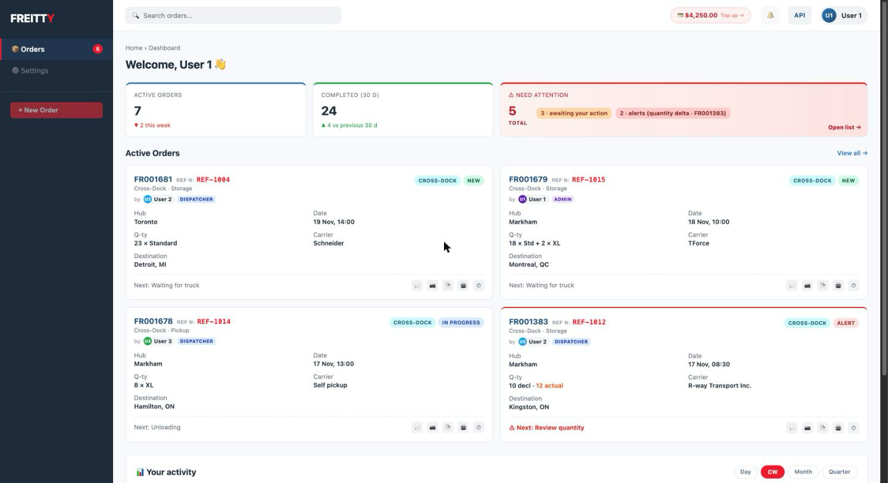
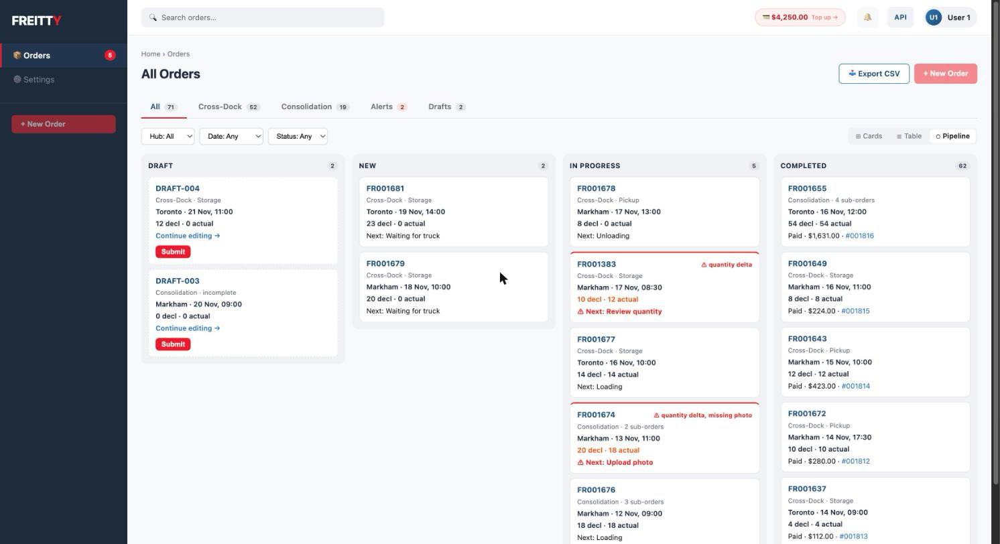
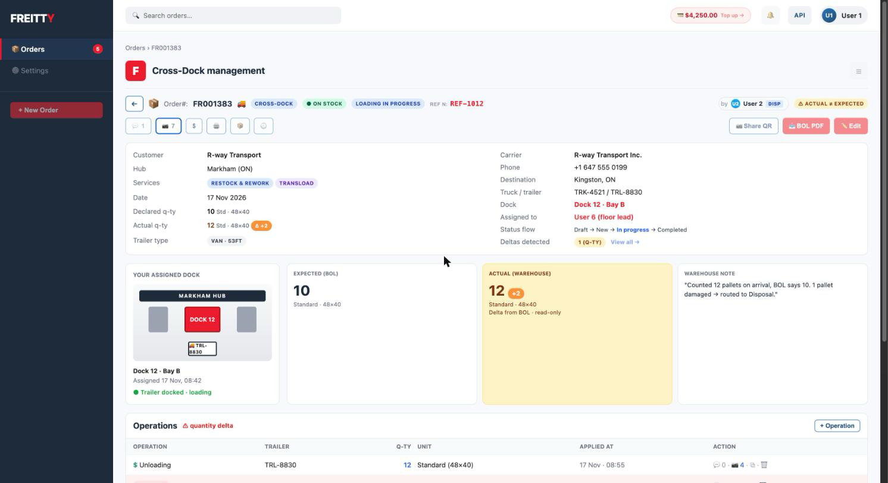
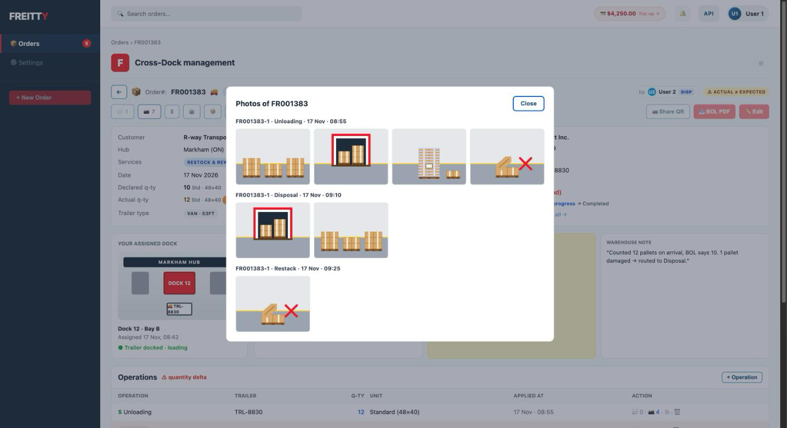

Тестове завдання · Backend .NET
Freitty Cabinet APIбекенд клієнтського кабінету крос-док платформи
Три екрани — Dashboard, Order List і Order Detail — отримують усі дані з API. Фільтри, пошук і пагінація працюють у PostgreSQL, записи йдуть через доменний агрегат з optimistic concurrency, а застосунок розгорнуто в Azure з CD.
.NET 10FastEndpointsEF Core + DapperPostgreSQL 18Azure Container Apps
Кожен слайд читається сам: заголовок — твердження, під ним доказ і посилання на файл. Навігація — ← →, огляд усіх слайдів — O.
01 · Обсяг
Завдання — три екрани з готовою версткоюі бекенд, який їх наповнює
Що вимагалося
- Готовий макет трьох екранів: Dashboard, Order List, Order Detail. Розмітку й стилі не переписувати.
- Бекенд на .NET і PostgreSQL, з якого екрани беруть усі дані.
- Фільтри, пошук і пагінація — на боці бази, а не в пам'яті.
- Розгорнутий застосунок, README і коротка презентація.
Додав понад завдання
- Запис операції на Shipment: транзакція й optimistic concurrency.
- Pipeline-дошка в Order List і submit чернетки — перетягуванням або кнопкою.
- Фото операцій у blob storage; завантаження закриває Missing photo alert.
- CSV-експорт відфільтрованого списку і табличний вигляд.
- CI/CD: у прод іде саме той образ, який пройшов перевірку.
- Демо-дані, що перебудовуються від «сьогодні» на кожному старті й щоночі.
Свідомо не робив
- Вхід і ролі: поточний користувач — перший Admin засіяної компанії.
- Справжні платежі: оплата — лише факт Invoice.
- Створення й редагування замовлення: домен це вміє (
Order.StartDraft,AddShipment,DeclareCargo…), але екрана для цього в макеті немає. - Кнопки поза трьома екранами (New Order, Settings, BOL PDF…) лишилися на місці з позначкою «Not part of this assignment».
01 · Пріоритети
Найбільше уваги — тому, що важко виправити потіммодель, запити, тести, реліз
Доменна модель
178Один агрегат Order, правила — у його методах. Юніт-тести домену без бази й без вебхоста.
Запити в базі
0,04 мсФільтри, пошук через pg_trgm і пагінація — у SQL. Плани EXPLAIN ANALYZE до й після індексу на 200 000 замовлень.
Справжній PostgreSQL
465Інтеграційні тести через HTTP на PostgreSQL 18 і Azurite у Testcontainers. Гонку двох записів теж відтворено в тестах.
Чесний реліз
0збійних запитів, коли нова ревізія перебирала трафік на живому застосунку. Ревізія, що не стартує, трафіку не отримує.
0,04 мс замість 4,3 — перша сторінка списку компанії з 4 000 замовлень після індексу ix_orders_company_id_scheduled_at_id. 178 + 465 = 643 тести, усі зелені на останньому прогоні.
01 · Робота з AI
Рішення ухвалював я, рутину делегувава правила записані в репозиторії, не в голові
Робив сам
- План і рішення до першого рядка коду:
docs/plan.md, 17 ADR. - Правила для людей і агентів:
CLAUDE.mdі 19 правил уcode-rules.md. - Grooming кожного кроку — специфікація в
docs/steps/: рішення, контракт, критерії приймання, тести. - Остаточна перевірка кожного кроку. Коміт і push — лише після мого «так».
Делегував
- Реалізацію — у свіжій сесії, яка отримує лише специфікацію і
CLAUDE.md. Чого специфікація не каже — питати, а не вгадувати. - Тести — агент
test-author: запускає їх і звітує реальний результат. - Рев'ю — агент
code-reviewerу чистому контексті й на іншій моделі, ніж автор коду. Бачить лише diff, спершу збирає й ганяє тести, нічого не править, лише звітує.
Запобіжники в репозиторії
secrets-scan— блокує вміст, схожий на справжній секрет.dotnet-format— форматує кожен змінений.cs.git-commit-push-confirm— кожен commit і push підтверджую вручну.ai-trailer-guardі.githooks/commit-msg— жодної AI-атрибуції в історії.- CI:
dotnet format --verify-no-changes, warnings as errors.
CLAUDE.md · .claude/hooks · .claude/agents · docs/engineering/code-rules.md
02 · Мова домену
Одна мова для коду, документів і розмовиназви в коді беруться зі словника
Повні визначення, яких слів уникати й приклад діалогу — у CONTEXT.md.
- Order
- Запит компанії-клієнта, щоб хаб обробив її вантаж.
- Cross-Dock
- Order з одним Shipment; вид — Storage або Pickup.
- Consolidation
- Кілька Shipment у спільні вихідні трейлери; щонайменше два.
- Shipment
- Одна партія за одним bill of lading, з Ref N клієнта. В UI — «sub-order».
- Cargo Line
- Рядок bill of lading: Unit Type і задекларована кількість.
- Operation
- Фізична дія хабу: Unloading, Disposal, Restack або Loading.
- Actual quantity
- Сума Unloading. Окремо ніколи не вводиться.
- On stock
- Розвантажено − утилізовано − завантажено.
- Received
- Хаб оголосив, що приймання партії завершено.
- Quantity delta
- Actual − Declared на Shipment і Unit Type. Нестача — лише після Received.
- Alert
- Запис, що клієнта повідомили про проблему з Shipment. Не статус.
- Photo
- Документує Operation; до десяти на операцію. Без нього — Missing photo alert.
- Статус
- Draft → Ready → In progress → Completed. Лише про вантаж.
- Active · Need attention
- Ready або In progress · чернетки, неоплачені Invoice і відкриті Alert.
- Invoice
- Запит на оплату. «Оплачено» — факт Invoice, не статус Order.
- Stage
- Де вантаж у роботі хабу; виводиться зі статусу і Shipment.
02 · Агрегат
Order — один агрегат, і єдиний з правиламиусе всередині змінюється лише через його методи
Що Order вирішує сам
- Submit — лише з Draft і лише повного;
CanSubmitперелічує, чого бракує. - Будь-яка дія хабу переводить Ready → In progress.
- Disposal, Restack чи Loading не беруть більше, ніж є On stock.
- Quantity delta alert відкривається й закривається разом із кількостями.
- Unloading чи Disposal без фото відкриває Missing photo alert.
- Complete — коли все Received, на складі порожньо і жодного відкритого Alert.
- Час іде лише вперед: зміна, раніша за останню, — порушений контракт.
- Кожна зміна оновлює
UpdatedAtі робитьVersion++на корені.
Конструктори й мутатори дочірніх сутностей — internal. ADR 0003 · Order.cs
02 · Бізнес-метод
Чи можна записати операцію — вирішує агрегатобробник лише передає намір і момент часу
public Result<Operation> RecordOperation(Guid shipmentId, NewOperation newOperation, DateTimeOffset now)
{
NewOperation checkedOperation = CheckContract(newOperation);
DateTimeOffset instant = AcceptInstant(now);
Result<Shipment> lookup = FindActiveShipment(shipmentId);
if (lookup.IsFailure)
…
// Unloading has no upper bound: receiving more than declared is exactly what a Quantity delta records.
Shipment shipment = lookup.Value;
int onStock = shipment.OnStock(checkedOperation.UnitType);
if (checkedOperation.Type != OperationType.Unloading && checkedOperation.Quantity > onStock)
{
return OrderErrors.ExceedsStock(
…
Operation operation = shipment.RecordOperation(checkedOperation, instant);
RecordHubWork(instant);
return operation;
}// A Restack rearranges pallets and does not change their count.
internal int StockChange => Type switch
{
OperationType.Unloading => Quantity,
OperationType.Disposal or OperationType.Loading => -Quantity,
OperationType.Restack => 0,
…
};- Unloading не має верхньої межі: надлишок — саме те, що фіксує Quantity delta.
- Решта типів не бере більше, ніж є On stock цього Unit Type. Відмова
ExceedsStockназиває партію і числа. - On stock — сума
StockChangeпо журналу; Restack кількості не змінює. RecordHubWork: перша дія хабу стартує замовлення, кожна дія —Version++.
02 · Бізнес-правило
Alert реагує на зміну дельти, а не на її наявністьприйнятий вручну надлишок не відкриває alert удруге
// The alert follows changes of the delta, not its presence: once resolved by hand, the same delta does not
// raise it again, while a different one does — also a smaller one, since the client was told about a state
// that no longer holds.
private void FollowQuantityDelta(int[] deltasBefore, DateTimeOffset now)
{
int[] deltasAfter = KnownDeltas();
Alert? openAlert = FindOpenAlert(AlertType.QuantityDelta);
if (deltasAfter.All(delta => delta == 0))
{
openAlert?.Resolve(now);
return;
}
if (!deltasAfter.SequenceEqual(deltasBefore))
{
RaiseUnlessOpen(AlertType.QuantityDelta, now);
}
}// One value per Unit Type, in enum order. An excess counts as soon as it is unloaded; a shortage only once
// the shipment is received. A Unit Type that was not declared counts as declared zero.
private int[] KnownDeltas()
{
return AllUnitTypes.Select(KnownDelta).ToArray();
}
private int KnownDelta(UnitType unitType)
{
int delta = ActualQuantity(unitType) - DeclaredQuantity(unitType);
return delta > 0 || IsReceived ? delta : 0;
}Ті самі правила — назвами тестів
- UnloadingAboveDeclaredRaisesQuantityDeltaAlertAtOnce
- FinishingReceivingAShortShipmentRaisesQuantityDeltaAlert
- FinishingReceivingWithTheSameExcessKeepsAResolvedAlertResolved
- SmallerShortageAfterManualResolutionRaisesANewAlert
QuantityDeltaTests.cs — 16 тестів
02 · Макет і модель
Макет суперечив сам собімодель побудована так, що ці суперечності неможливо відтворити
| Де | У макеті | У моделі |
|---|---|---|
| FR001676 | Q-ty «15 Std + 3 XL» = 18, а sub-orders 9 + 6 + 12 = 27 | Declared є лише в Cargo Lines; кількість замовлення — їхня сума, окремої колонки немає |
| Вкладки списку | Cross-Dock 18 + Consolidation 6 + Drafts 1 = 25, а All = 27 | Лічильник вкладки — total списку з тим самим фільтром (OrderFilter) |
| FR001383 | У тулбарі 📷 0/5, а в операціях 4, 2 і 1 фото | Лічильники — суми по операціях; тепер за ними справжні файли |
| Статуси | Draft → Ready → In Progress → Closed; бейджі «Completed» і «Done»; «Next: Paid» | Чотири статуси лише про вантаж; оплата — Invoice; Alert — запис, а не статус |
| Dashboard | В Active Orders — FR001672 зі статусом Completed | Active = Ready або In progress (Order.ActiveStatuses) |
| Dashboard | «Completed (30d): 24 — same as last month» поруч із «+18% vs previous month» | Плитка і підсумок графіка — з одного SQL-запиту |
| Pipeline | Нотатка про сім колонок | Чотири колонки — статуси, якими володіє домен (крок 11) |
| Гроші | Усі суми — $1 | Реалістичні ціни; ціна Supply line фіксується в момент додавання |
Повний розбір: docs/mockup-analysis.md · ADR 0004
03 · Схема
Схема: агрегат і довідники навколо
Агрегат Order · змінюється лише через Order
Довідники й Invoice
Видалення: CASCADE для рядків, що лише описують замовлення; RESTRICT для журналу і довідників.
Блакитним — зовнішні ключі. Повна схема з усіма колонками й обмеженнями: docs/er-diagram.md
03 · Чому так
Кожна кількість має одне джереложурнал операцій лише доповнюється, похідне рахується
Журнал операцій append-only
Домен ніколи не змінює й не видаляє Operation. Actual і On stock — суми по журналу; RESTRICT не дає видалити замовлення з журналом.
version на корені
Кожна зміна агрегату його збільшує, тож UPDATE … WHERE version = <прочитана> ловить будь-який конкурентний запис.
Enum — integer з явним значенням
Draft = 1: збережене значення не залежить від порядку оголошення. CHECK будується з самого enum.
Номери з послідовності
order_number_seq: унікальні й зростаючі, без гонки двох submit. Не щільні — і це прийнято.
Фото — рядок плюс blob
Байти — у приватному контейнері, у photos — ключ, тип і розмір. photo_count підтримує агрегат.
Міграції на старті, лише адитивні
Нова ревізія мігрує, поки стара ще обслуговує запити. Тому rename чи drop — у два релізи. Наразі п'ять міграцій.
// The list is built from the enum, so a new member changes the constraint in the next migration. The naming
// convention does not touch raw SQL: the column is given in snake_case.
public static TableBuilder<TEntity> HasEnumCheckConstraint<TEntity, TEnum>(
this TableBuilder<TEntity> table,
string column)
where TEntity : class
where TEnum : struct, Enum
{
string values = string.Join(
", ",
Enum.GetValues<TEnum>().Select(value => Convert.ToInt32(value, CultureInfo.InvariantCulture)));
table.HasCheckConstraint($"ck_{table.Name}_{column}", $"{column} IN ({values})");
return table;
}Так у міграції з'являється ck_orders_status зі списком status IN (1, 2, 3, 4), і новий член enum змінює обмеження в наступній міграції.
03 · Індекси
Індекси підібрані під запити спискувиміряно EXPLAIN (ANALYZE, BUFFERS) на 200 000 замовлень
| Запит | Індекс | До | Після |
|---|---|---|---|
| Список за замовчуванням, перша сторінка | ix_orders_company_id_ scheduled_at_id | 4,3 мс 2 391 буф. · Sort | 0,04 мс 4 буф. · без Sort |
Пошук за номером FR0000150 | ix_orders_number_trgm GIN, pg_trgm | 5,3 мс 2 414 буф. | 2,5 мс 150 буф. |
Пошук за Ref N REF-0000224 | ix_shipments_ref_ number_trgm | 47,9 мс 5 423 буф. | 5,8 мс 364 буф. |
| Pipeline: totals і перші картки | ix_orders_company_id_ status_scheduled_at_id | 6,5 + 7,4 мс 2 385 + 4 779 | 0,66 + 1,0 мс 36 + 78 |
50 компаній по 4 000 замовлень, 300 000 shipments, 590 000 операцій; міряється компанія 0, другий прогін, PostgreSQL 18.7. Таймінги плавають, форма плану й буфери — ні. docs/explain/
SELECT o.id
FROM orders AS o
WHERE o.company_id = '01a1ec12-b046-79b9-9bbd-4b3fc38576fe' AND o.id IN (
SELECT o0.id
FROM orders AS o0
WHERE o0.company_id = '01a1ec12-b046-79b9-9bbd-4b3fc38576fe' AND o0.number ILIKE '%REF-0000224%' ESCAPE '\'
UNION
SELECT s.order_id AS id
FROM orders AS o1
INNER JOIN shipments AS s ON o1.id = s.order_id
WHERE o1.company_id = '01a1ec12-b046-79b9-9bbd-4b3fc38576fe' AND s.ref_number ILIKE '%REF-0000224%' ESCAPE '\'
…
ORDER BY o.scheduled_at DESC, o.id DESC
LIMIT 12 OFFSET 0Пошук — UNION гілок, кожну обслуговує свій trigram-індекс. Очевидна форма number ILIKE … OR EXISTS (…) обходить усі 4 000 замовлень компанії: 9,7 мс і 4 350 буферів проти 5,8 мс і 364.
04 · Архітектура
Чотири проєкти, межі тримає компіляторLight Clean Architecture: шари є, церемонії немає
Одна операція — одна папка
Application/Orders/RecordOperation/ RecordOperationCommand.cs RecordOperationCommandHandler.cs RecordOperationCommandValidator.cs RecordOperationMapper.cs · RecordedOperationDto.cs Api/Endpoints/Orders/RecordOperation/ RecordOperationEndpoint.cs · RecordOperationRequest.cs
public static IServiceCollection AddCommandPipeline(this IServiceCollection services)
{
services.AddValidatorsFromAssembly(typeof(DependencyInjection).Assembly);
services.AddCommandMiddleware(middleware => middleware.Register(
typeof(CommandLogging<,>),
typeof(CommandValidation<,>)));
return services;
}Кожна помилка — ProblemDetails: DomainError.Kind стає 404 чи 409 і несе стабільний code; 400 від валідатора — у форматі FastEndpoints. ADR 0001 · 0009
04 · Патерни
Що взято з DDD, CQRS, Clean Architecture і REPRі чого свідомо не взято
| Підхід | Взято | Не взято — і чому |
|---|---|---|
| DDD | Агрегат Order з інваріантами й бізнес-методами; єдина мова (CONTEXT.md); фабричний метод Order.StartDraft; очікувані відмови — Result з кодом, а не винятки | Value object на кожне поле, доменні події з диспетчером, generic repository, strongly typed ids, кілька bounded contexts: споживача для них немає (ADR 0003) |
| CQRS | Читання проєктуються одразу в DTO (AsNoTracking, Select, AsSplitQuery); агрегати дашборда — Dapper і SQL (ADR 0011); запис — лише через агрегат | Окреме сховище для читання й event sourcing: схема для екранів однаково була б, але вже як похідна з власним rebuild (ADR 0005) |
| Clean Architecture | Напрямок залежностей, Domain без пакетів, порти для зовнішнього: IAppDbContext, IOrderNumbers, IPhotoStorage | «Light»: без інтерфейсу на кожен клас, без repository поверх EF і без use-case інтерфейсів — вони сховали б SQL, який тут і треба показати (ADR 0001) |
| REPR | Один клас endpoint на маршрут: request → command → response; маршрути — константи ApiRoutes | Контролери, що збирають непов'язані дії в одному класі (ADR 0009) |
| Бібліотеки | Command bus FastEndpoints для конвеєра «логування → валідація → handler»; Mapperly (source-generated) на боці запису | MediatR і AutoMapper — комерційні ліцензії, а їхню роботу вже роблять наявні інструменти (docs/plan.md §3) |
04 · Процес 1 · Order List
Фільтри, пошук і сторінки виконуються в SQLодин клас фільтра — для списку, лічильників вкладок, експорту й дошки
IQueryable<Order> filtered = orders.Where(order => order.CompanyId == companyId);
if (hubId is { } hub)
{
filtered = filtered.Where(order => order.HubId == hub);
}
…
if (status is { } orderStatus)
{
filtered = filtered.Where(order => order.Status == orderStatus);
}
if (!string.IsNullOrWhiteSpace(searchText))
{
IQueryable<Guid> matchingIds = search.MatchingOrderIds(companyId, searchText.Trim());
filtered = filtered.Where(order => matchingIds.Contains(order.Id));
}
return filtered;int total = await orders.CountAsync(ct);
List<Guid> pageIds = await OrderListSort.Apply(orders)
.Skip((query.Page - 1) * query.PageSize)
.Take(query.PageSize)
.Select(order => order.Id)
.ToListAsync(ct);
IReadOnlyList<OrderCardDto> cards = await cardReader.ReadAsync(user.CompanyId, pageIds, ct);SELECT o.id
FROM orders AS o
WHERE o.company_id = '01a1ec12-b046-79b9-9bbd-4b3fc38576fe'
ORDER BY o.scheduled_at DESC, o.id DESC
LIMIT 12 OFFSET 0- Спершу id сторінки й total, потім картки лише цих id. Компанія — обов'язковий аргумент фільтра, тож жоден запит її не пропустить.
- Сортування закінчується на
id: сторінки не повторюють і не гублять рядків.
04 · Процес 2 · Запис операції
Версія, агрегат, одна транзакціяз двох одночасних записів виграє рівно один, другий отримує 409
- POST…/orders/{number}/operations
- Endpointrequest → command
- CommandLoggingодин рядок на команду
- CommandValidationFluentValidation → 400
- Handlerверсія → агрегат
- SaveChangesWHERE version = …
- 201 / 409ProblemDetails з code
Order? order = await LoadOrderAsync(user.CompanyId, command.OrderNumber, ct);
…
if (order.Version != command.ExpectedVersion)
{
return OrderRequestErrors.VersionConflict(order.Number, order.Version, command.ExpectedVersion);
}
…
Result<Operation> operationResult = order.RecordOperation(
shipment.Id,
command.ToNewOperation(),
clock.GetUtcNow());
…
if (!await db.TrySaveChangesAsync(ct))
{
return OrderRequestErrors.ChangedConcurrently(order.Number);
}{
"status": 409,
"detail": "Order FR001383 was changed since you loaded it (version 21, expected 20). Reload and try again.",
"instance": "/api/v1/orders/FR001383/operations",
"code": "order.version_conflict",
…
}expectedVersionбереться з detail і звіряється ще до агрегату: застаріла сторінка, подвійний клік і повтор не запишуться двічі.- Якщо інший запис устиг між читанням і збереженням,
UPDATEне знаходить рядка — 409. - Друга гонка — два однакові відкриті Alert — упирається в частковий унікальний індекс і теж стає 409.
READ COMMITTED, без повторів усередині запиту. Тест:OfTwoSimultaneousRequestsOneIsRecorded.
04 · Процес 3 · Submit з Pipeline
Чернетку в Ready переводить домен«чи можна» → номер із послідовності → збереження з версією
Result check = order.CanSubmit();
if (check.IsFailure)
{
return check.Error;
}
string draftNumber = order.Number;
string officialNumber = await orderNumbers.NextAsync(ct);
Result submitResult = order.Submit(officialNumber, clock.GetUtcNow());
…
if (!await db.TrySaveChangesAsync(ct))
{
return OrderRequestErrors.ChangedConcurrently(draftNumber);
}// Asked before an official number is taken, so a refused submit uses none; Submit asks it again.
public Result CanSubmit()
{
if (Status != OrderStatus.Draft)
{
return OrderErrors.NotDraft(Number, Status);
}
List<string> missingParts = MissingForSubmit();
if (missingParts.Count > 0)
{
return OrderErrors.NotReadyToSubmit(Number, missingParts);
}
return Result.Success();
}IOrderNumbers.NextAsync — порт; Infrastructure відповідає nextval('order_number_seq'), тож два submit не отримають один номер.
Відмовлений submit номера не бере. Розрив лишає лише той, що програв гонку після nextval: номери унікальні, але не щільні.
На демо DRAFT-003 отримує 409 з переліком того, чого бракує, а DRAFT-004 переходить у Ready з номером FR + шість цифр. крок 11
04 · Процес 4 · Фото операції
Завантаження — це два записи без спільної транзакціїтому порядок перевірок і прибирання продумані наперед
List<NewPhoto> newPhotos = await NameUploadsAsync(command.Files, ct);
Result<PhotoAttachment> attachResult = order.AttachPhotos(command.OperationId, newPhotos, clock.GetUtcNow());
if (attachResult.IsFailure)
{
return attachResult.Error;
}
…
if (await CountUploadedPhotosAsync(ct) + command.Files.Count > MaxUploadedPhotoCount)
{
return PhotoRequestErrors.UploadLimit(MaxUploadedPhotoCount);
}
if (!await StoreAndSaveAsync(command.Files, newPhotos, ct))
{
return OrderRequestErrors.ChangedConcurrently(order.Number);
}
return attachResult.Value.ToDto(order.Version);- До handler: ≤ 4 завантаження одночасно (429); вимикач завантажень (503).
- Валідатор: 1–5 файлів до 5 MB; JPEG, PNG чи WebP — за сигнатурою (400).
- Замовлення (404), версія (409); агрегат: операція (404), активне замовлення і ≤ 10 фото (409); межа демо — 200 фото (409).
- Blob
uploads/<uuid>пишеться раніше за рядок; якщо збереження не вдалося — видаляється.
finally
{
if (!isSaved)
{
await photoStorage.DeleteAsync(newPhotos.Select(photo => photo.StorageKey), CancellationToken.None);
}
}Missing photo alert агрегат закриває сам, коли в Shipment не лишилося Unloading чи Disposal без фото. ADR 0017
05 · Стек
Стек: кожна бібліотека з причиноюпоточні стабільні версії з Directory.Packages.props
| Шар | Що і яка версія | Навіщо |
|---|---|---|
| Платформа | .NET SDK 10.0.100 · ASP.NET Core 10 | Ціль завдання; Docker-образи dotnet/sdk:10.0 і aspnet:10.0 |
| API | FastEndpoints 9.0.0 · FastEndpoints.OpenApi 9.0.0 · Scalar.AspNetCore 3.0.1 | REPR, command bus з middleware, OpenAPI і сторінка API reference |
| Валідація, мапінг | FluentValidation 12.2.0 · Riok.Mapperly 4.3.1 | Валідатор на кожну команду; мапінг генерується під час збірки |
| Дані | EF Core 10.0.15 · Npgsql EF Core 10.0.3 · EFCore.NamingConventions 10.0.1 · Dapper 2.1.89 | EF — для рядків і записів, Dapper — для агрегатів дашборда |
| База, файли | PostgreSQL 18 (postgres:18-alpine) · Azure.Storage.Blobs 12.30.1 · Azurite 3.38.0 | pg_trgm, sequence, CHECK; та сама версія локально, у тестах і в Azure |
| Логи | Serilog.AspNetCore 10.0.0 | Один рядок на запит і на команду |
| Тести | xUnit v3 4.0.3 · Microsoft.Testing.Platform · Testcontainers 4.17.0 · TimeProvider.Testing 11.0.0 | Справжній PostgreSQL і Azurite; фіксований час |
| Frontend | HTML макета + ванільні ES-модулі | Верстка вже готова; без фреймворку і без збірки (ADR 0012) |
| Доставка | Docker Compose · GitHub Actions · Azure | Один docker compose up локально, CD у Container Apps |
05 · Деплой і CD
У прод іде саме той образ, що пройшов перевіркутрафік переходить лише після того, як нова ревізія пройшла probes
Ресурси Azure · North Europe
- Container Apps: 1 репліка, завжди ввімкнена, 0,25 vCPU, 0,5 GiB
- PostgreSQL 18 flexible server, B1ms, TLS із перевіркою
- Container Registry Basic,
AcrPullчерез managed identity - Storage account, приватний контейнер
photos - Log Analytics з денним лімітом
Без збереженого облікового запису
GitHub входить в Azure через OIDC: federated credential лише для main, ролі AcrPush і Contributor лише на одному container app. У GitHub — тільки змінні, жодного секрету.
Виміряно на живому застосунку
Ревізія, що не може стартувати, за п'ять хвилин спроб не отримала трафіку. Здорова перейняла його без жодного збійного запиту (один запит на секунду).
05 · Демо · Dashboard
Dashboard: плитки й графік з одного SQLперіоди нарізаються в часовому поясі звітності

- Active, Completed за 30 днів, Need attention: кожна цифра — з одного запиту, тож плитка й підсумок графіка не суперечать одне одному.
- Графік: Day, CW, Month, Quarter. Вісь генерується в поясі
America/Toronto, тож порожні періоди — рядки з нулями. - Need attention і бейдж Orders рахуються за одним визначенням.
05 · Демо · Order List
Order List як дошка: колонка на кожен статусчернетку можна перетягнути в Ready

- Totals рахує
GROUP BY, перші п'ять карток кожного статусу добирає віконна функція — з одного індексу. - Вкладки, Hub, Date, Status і пошук працюють так само, як у вигляді Cards і Table.
DRAFT-004перетягується (або кнопка Submit) і отримує офіційний номер.DRAFT-003повертає перелік того, чого бракує.
05 · Демо · Order Detail
Order Detail: усе про замовлення однією відповіддюі з цієї ж сторінки записується операція

- Shipment з Arrival і Dock, Declared проти Actual з дельтою, журнал операцій, supplies, services, invoices.
- Читається split queries, які не завантажують жодної сутності, тож добутку двох колекцій немає.
- Відповідь несе
version, який форма запису операції відправляє назад.
05 · Демо · Фото
Галерея операції: файли з blob storage через APIзавантаження фото закриває Missing photo alert

- Контейнер приватний, байти віддає API: фото кешується на добу як
immutable, аCross-Origin-Resource-Policy: same-originне дає вбудувати його на іншому сайті. - Засіяні фото — рядки, що вказують на кілька згенерованих зображень-заглушок, тож лічильники й галереї збігаються.
- Завантажене відвідувачем видаляється при наступній перебудові даних.
05 · Межі й наступні кроки
Що свідомо обмежено — і що робив би далікожне обмеження записане в наслідках свого ADR
Відомі обмеження
- Один екземпляр: шлюз перебудови даних, послідовність номерів і годинник розраховані на один процес (ADR 0015, 0013).
- Входу немає: кожен відвідувач — перший Admin засіяної компанії.
- Демо-дані перебудовуються на кожному старті й щоночі за Торонто: записане відвідувачем живе до наступного дня.
- Ліміти спільні для всіх: 4 завантаження одночасно, 120 переглядів фото на хвилину, 200 фото загалом. Файл перевіряється лише за сигнатурою (ADR 0017).
- Помилковий Unloading не скасувати: reversal-операції в журналі ще немає (ADR 0005).
- Сервер БД доступний з ресурсів Azure; захищають лише пароль і TLS (ADR 0014).
- Перший запит після старту — близько 2,6 с через JIT на 0,25 vCPU.
Що далі
- Reversal-операція в журналі — новий рядок, що посилається на скасовану операцію. Перше, що потрібно до реального використання; адитивна міграція.
- Вхід і компанія з токена. Запити обмежені компанією з першого дня; ліміти стануть per-user.
- Managed identity для Blob Storage і PostgreSQL замість рядка підключення й пароля.
- Кілька екземплярів: міграції бандлом у CD, перебудова даних, узгоджена через базу, idempotency key на запис; keyset-пагінація для великих списків.